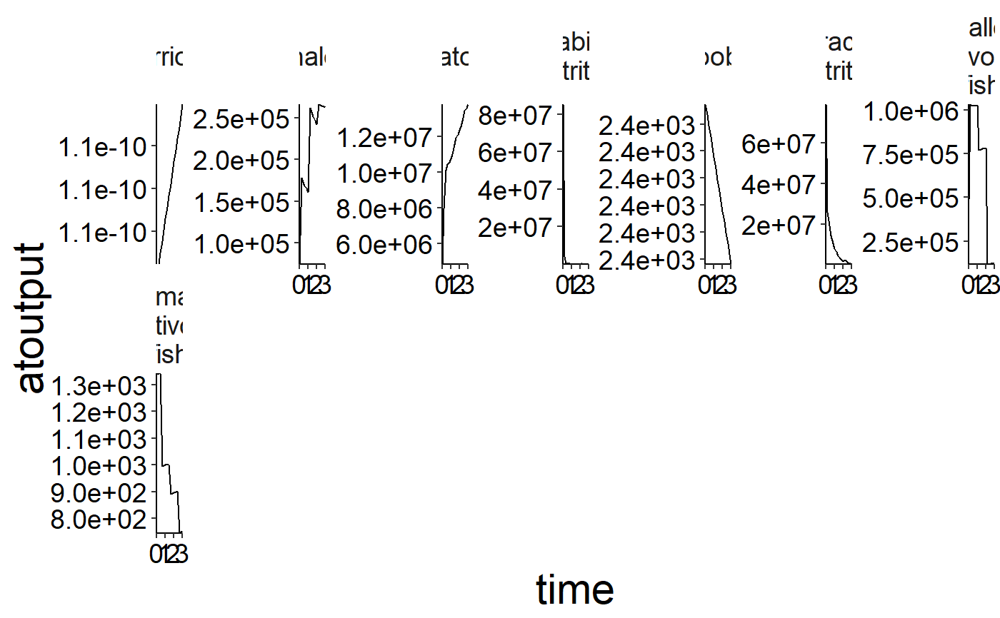
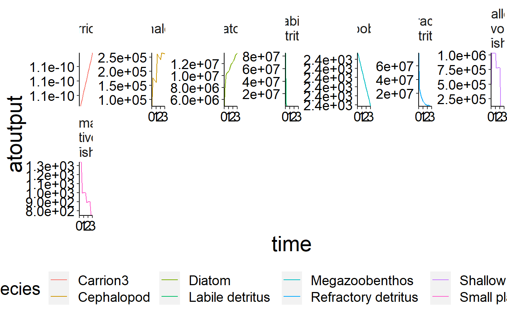
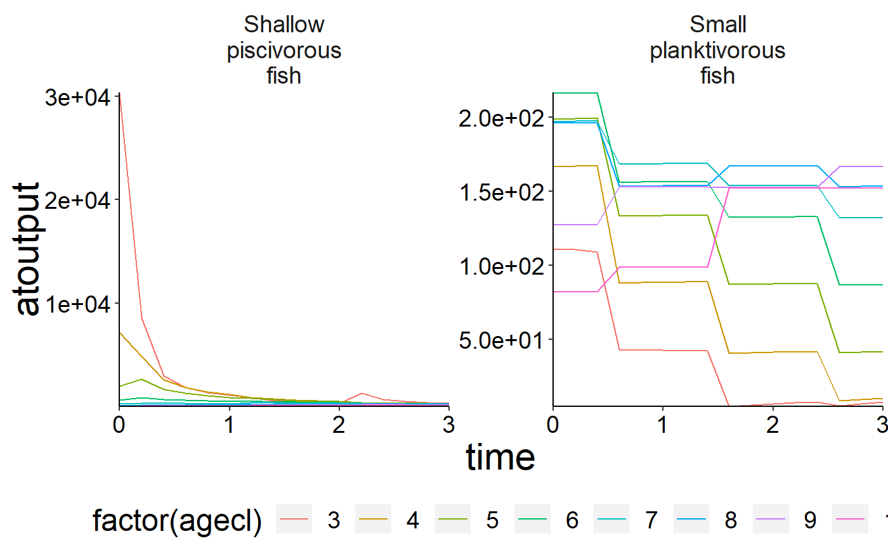
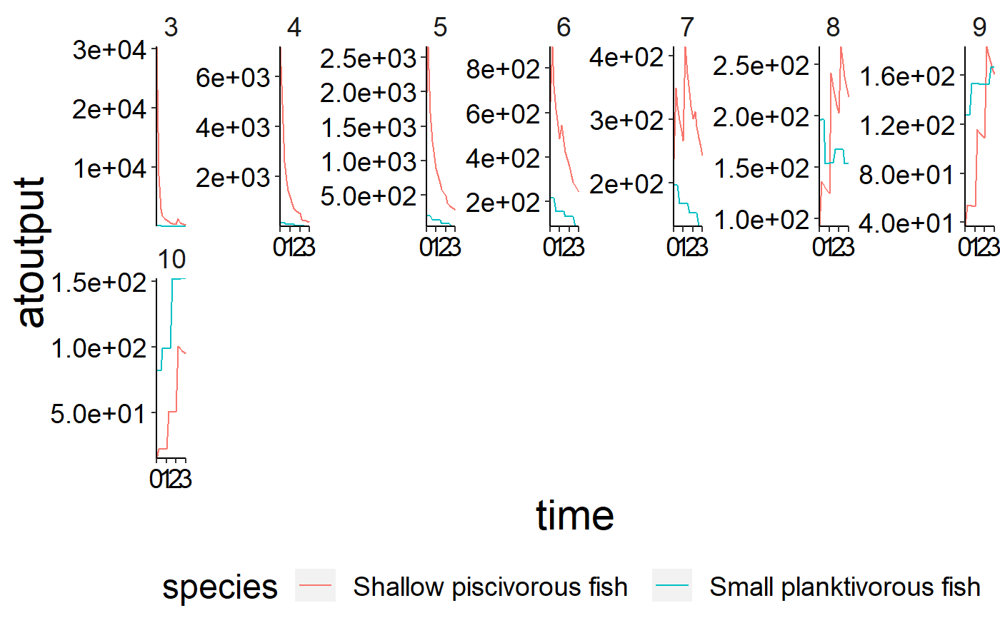
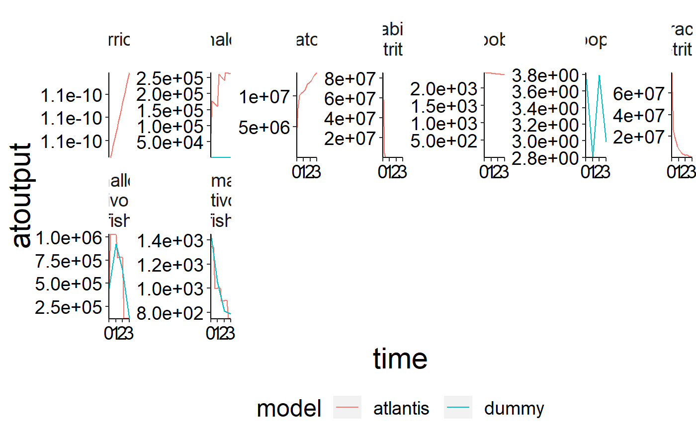

Function to plot time series of atlantis ncdf output.
plot_line(data, x = "time", y = "atoutput", wrap = "species", col = NULL, ncol = 7, yexpand = FALSE)
| data | Dataframe to be plotted. |
|---|---|
| x | x-variable. Default is |
| y | y-variable. Default is |
| wrap | Wraping column. Default is |
| col | Column to use as colour. Default is |
| ncol | Number of columns in multipanel plot. Default is |
| yexpand | Expands the y axis so it always includes 0. Default is |
ggplot2 object
Other plot functions: plot_bar,
plot_boxes,
plot_diet_bec_dev, plot_diet,
plot_rec, plot_species
plot_line(preprocess$biomass)plot_line(preprocess$biomass, col = "species")plot_line(preprocess$biomass_age, col = "agecl")plot_line(preprocess$biomass_age, wrap = "agecl", col = "species")# The function can also be used to compare model outoput with observed data. d <- system.file("extdata", "setas-model-new-becdev", package = "atlantistools") ex_data <- read.csv(file.path(d, "setas-bench.csv"), stringsAsFactors = FALSE) names(ex_data)[names(ex_data) == "biomass"] <- "atoutput" data <- preprocess$biomass data$model <- "atlantis" comp <- rbind(ex_data, data, stringsAsFactors = FALSE) # Show atlantis as first factor! lev_ord <- c("atlantis", sort(unique(comp$model))[sort(unique(comp$model)) != "atlantis"]) comp$model <- factor(comp$model, levels = lev_ord) # Create plot plot_line(comp, col = "model")if (FALSE) { # Use \code{\link{convert_relative_initial}} and \code{\link{plot_add_box}} # with \code{\link{plot_line}}. Use \code{\link{convert_relative_initial}} to # generate a relative time series first. df <- convert_relative_initial(preprocess$structn_age) # Create the base plot with \code{\link{plot_line}}. plot <- plot_line(df, col = "agecl") # Add lower and upper range. plot_add_box(plot) # Create spatial timeseries plots in conjuction with \code{\link{custom_grid}}. plot <- plot_line(preprocess$physics, wrap = NULL) custom_grid(plot, grid_x = "polygon", grid_y = "variable") plot <- plot_line(preprocess$flux, wrap = NULL, col = "variable") custom_grid(plot, grid_x = "polygon", grid_y = "layer") }